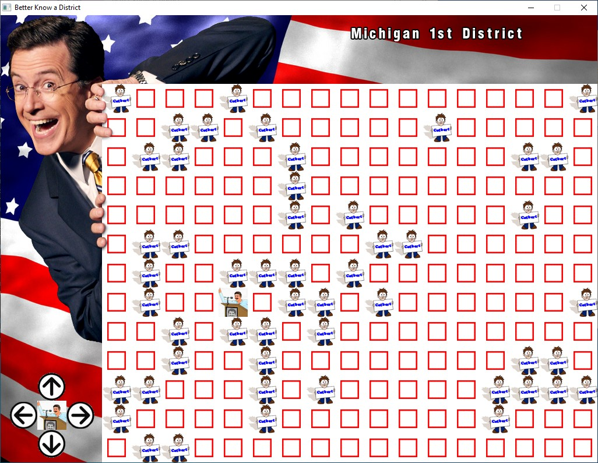

Better Know a District (2008)

Authors
Bryan, Alex, Steve (no surnames provided)
Description
Convince candidates to appear on Colbert's show
Downloads
Compatibility notes.
Confirmed working on Windows 10. Upon closing the game, you will need to press any key in the accompanying CMD window
to fully close the game and make the window disappear.